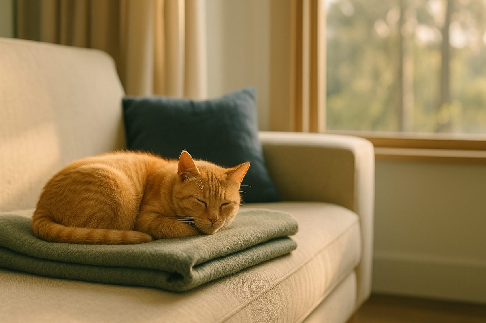
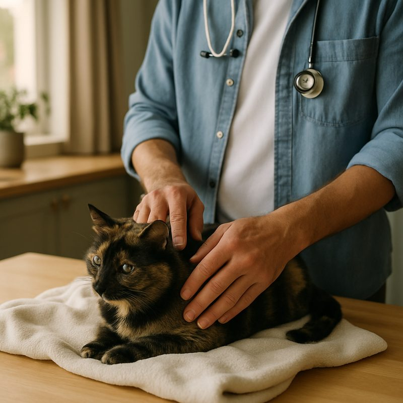

Cat & dog anxiety, signs, medication & natural remedies

Anxiety in cats and dogs is real, common, and increasingly treatable. The signs are often subtle: hiding, destruction when alone, pacing, excessive grooming or barking. Medication helps the moderate-to-severe cases, but the foundation is environmental and behavioural. Below: the home checklist, when to see a vet, what medication actually does, and the natural approaches Australian vets quietly back.
Signs of anxiety in cats and dogs
Anxiety doesn't usually announce itself. The cat that hides under the bed every time the doorbell rings isn't shy, they're anxious. The dog that destroys the kitchen during a 4-hour absence isn't bored, usually, they're panicking.
In dogs
- Pacing, panting or trembling without obvious cause
- Destruction focused on doors, windows or items with the owner's scent (the chewed-up shoe is a classic separation sign)
- Vocalisation when alone, often starting within minutes of departure
- Inappropriate toileting in a previously house-trained dog
- Excessive licking of one spot, often a leg, leading to a raw patch (acral lick dermatitis)
- Tucked tail, lowered head, ears back, whale eye (whites of the eyes showing)
In cats
- Hiding more than usual, particularly during the day
- Over-grooming to the point of bald patches, often along the belly or inner thighs
- Spraying or inappropriate urination outside the litter tray
- Aggression toward other pets or people in the household
- Loss of appetite, especially in noise or change-of-environment situations
- Vocalisation, particularly at night in older cats
Some of these overlap with medical issues. A cat that's over-grooming might have fleas, allergies or a thyroid problem before they have anxiety. A dog with new toileting issues might have a UTI before separation anxiety. Tell people when not to assume anxiety: if any sign appears suddenly in a previously settled pet, see a vet first to rule out medical causes. The cat vomiting guide and find a vet pages can help.
What causes pet anxiety
Three buckets, and most pets sit in more than one.
- Genetic temperament. Some breeds (Border Collies, Vizslas, Bengals) are wired for vigilance. Anxiety is the cost of intelligence in many cases.
- Early-life experience. Pets undersocialised between 3 and 14 weeks (dogs) or 2 and 9 weeks (cats) are far more likely to develop anxiety as adults. The "rescue dog with a past" thing is real.
- Environmental triggers. Moving house, a new baby, a change in working hours (the post-pandemic separation anxiety wave is well documented), construction noise, or a new pet in the household.
Once the trigger is identified, the path forward is usually clearer. Generalised anxiety with no obvious trigger is harder, and is where medication comes into its own.
Home changes that work
Before medication, before supplements, before anything off a shelf, the environmental basics. These work for most mild and moderate cases.
- Predictable routine. Same wake time, same feed time, same walk time. Anxiety thrives on uncertainty.
- Safe space. A crate (for crate-trained dogs), a covered cat carrier in a quiet room, an under-bed cave. Somewhere the pet can retreat that isn't intruded on.
- Mental enrichment. Snuffle mats, food puzzles, lick mats. A 10-minute brain-work session burns more anxiety energy than a 30-minute walk.
- Separation training. For dogs with separation anxiety: 5-minute departures, build to 10, build to 30, before any 4-hour absence. Rushing this fails almost every time.
- Pheromone diffusers. Adaptil for dogs, Feliway for cats. Mixed evidence in trials but a low-risk first step. About $40 to $50 for a starter pack.
- Background noise. Dog-specific calming music (Through a Dog's Ear has actual peer-reviewed research behind it) or talk radio for separation anxiety. Silence makes some pets worse.
When medication helps (and what it does)
Medication isn't a band-aid in moderate-to-severe anxiety. It's often what allows the behavioural training to work. Two broad categories:
Daily long-acting medications
- Fluoxetine (Prozac). The most common SSRI for both dogs and cats. Takes 4 to 6 weeks to reach full effect. Around $30 to $60 a month.
- Clomipramine (Clomicalm). Tricyclic, used for separation anxiety in dogs. Similar timescale and cost.
- Trazodone. Used for situational anxiety (vet visits, fireworks) but increasingly for daily use in some dogs.
Short-acting "event" medications
- Gabapentin. Common for vet visits and travel. Cheap, well tolerated, given 2 to 3 hours before the trigger.
- Trazodone. Faster acting than fluoxetine, often given for storms or fireworks.
- Sileo (dexmedetomidine oromucosal gel). Specifically for noise phobia. Around $30 a tube.
Daily medication takes commitment. Doses can't be skipped without rebound. Many owners stop at 3 weeks because "it's not doing anything", but the SSRIs simply haven't loaded yet. The honest conversation with your vet should include the duration: most pets need 6 to 12 months minimum, some lifelong.
Natural and supplement options
The supplement aisle is bigger than the prescription aisle. Some products have real evidence behind them, some are hopeful packaging.
- Zylkene (alpha-casozepine). Milk-protein derivative. Modest but real evidence in dogs. About $40 a month.
- Anxitane (L-theanine). Green tea derivative. Mild calming effect, useful for situational use.
- CBD oil. Currently legal for vet prescription in Australia (since 2020), though most vets still treat it as experimental. Mixed evidence; talk to a vet before using human CBD products.
- Calming chews (composite products). Often L-tryptophan, chamomile, valerian. Cheap and low-risk; effect varies wildly between pets.
One opinion: if your pet has moderate anxiety and you've tried supplements and pheromones for 6 weeks with no change, it's time for a vet conversation about prescription options. Spending another 6 weeks on a different supplement is rarely the answer, and in the meantime the pet is suffering.

What treatment costs in Australia
For severely anxious pets, the mobile vet option is often the difference between a productive consult and a wasted one. Cars, waiting rooms and cold tile floors are exactly the triggers anxious cats and rescue dogs have spent years building defences against. The vet payment plans guide has options if cost is a concern.
Straight answers
Can I give my dog human anxiety medication?
Some are safe at adjusted doses (fluoxetine, gabapentin) but only on prescription from a vet. Many are toxic (paracetamol can kill cats; ibuprofen can kill dogs). Never share without checking.
How long until SSRI medication starts working?
4 to 6 weeks for full effect. Some owners notice subtle changes at 2 weeks, but the steady-state effect needs the longer window. Don't judge by week 1.
Will my pet need medication forever?
Often no. With consistent behavioural work, many pets can taper off after 6 to 12 months. Some need lifelong support, especially generalised anxiety with no clear trigger.
What's the difference between anxiety and a phobia?
Anxiety is generalised and ongoing; a phobia is intense fear of a specific trigger (storms, fireworks, men in hats). Phobias often respond well to event-based medication; generalised anxiety needs the daily kind.
Should I get a second pet to help with separation anxiety?
Rarely a good idea. Separation anxiety is usually attachment to a person, not a need for company. Adding a second anxious pet is how households end up with two pacing, panting dogs.
Are pheromone diffusers actually effective?
Mild but measurable in trials. Most useful as part of a wider approach, not as a single fix. Cheap enough to try first.
Anxious pets are not "broken" or "untrained". They're animals with the same neurochemistry as anxious humans, doing their best in environments they didn't choose. The combination of consistent routine, environmental enrichment and (where needed) the right medication transforms the lives of most affected pets within a few months. If you're unsure where to start, a registered vet is the best first call. Related: cat vomiting, emergency vet, mobile vet. Information here is general and isn't a substitute for veterinary advice.